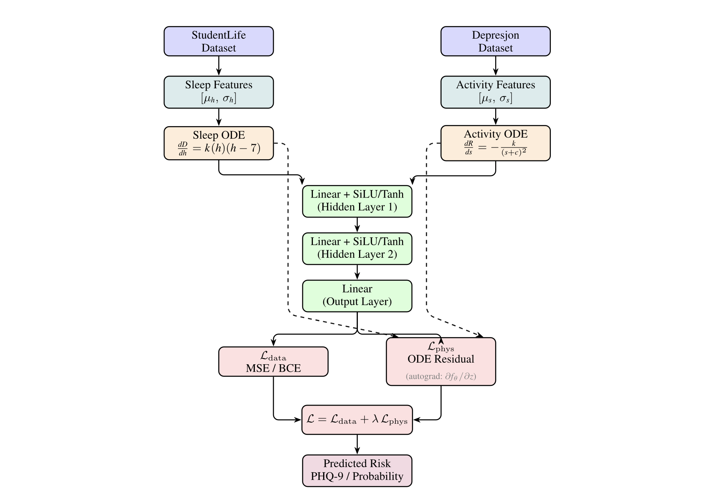

Notes on writing and tuning CUDA matmul kernels.

@@ publications @@

P²INNs: Physio-Psychiatry Informed Neural Networks
A novel architecture for depression risk prediction integrating physiological and psychiatric indicators. Developed during a research internship at the University of Galway.
@@ experience @@
f3a9c21
Aug 2026 – present
HEAD
AI Engineering Intern @ Horrazon AI
b7e401dJul – Aug 2026
Research Intern @ QWorld
1c88ae4Jan – Mar 2026
AI Research Intern @ University of Galway
@@ open source @@
hover or focus a node — 8 merged patches across 5 repositories
@@ projects @@index / 01–10
systems
agents
experiments — from Fun
hover or focus a tile for details
@@ posts @@
From 44 GFLOP/s to 376 GFLOP/s: Learning GPU Performance Through MatMul
Building tinyGPT in C++
Implementing a 30M-parameter GPT from scratch with NEON, SSE, and OpenMP.
Backpropagation: The Engine of Deep Learning
An intuitive walkthrough of backpropagation — from chain rule to automatic differentiation.
Intuition Behind Neural Networks
Understanding neural networks one parameter at a time.
Graph Retrieval Methods
A survey of why graph retrieval methods are useful for retrieving knowledge.